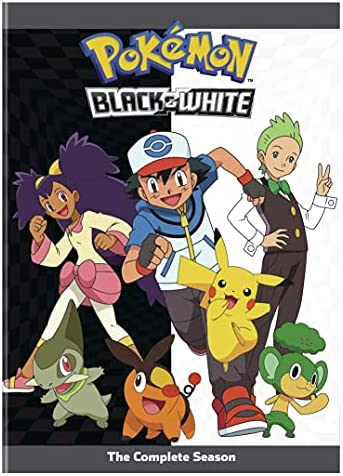

Animes
-
Índigo League

Sinopse
1ª Temporada
82 Ep.
É o décimo aniversário de Ash Ketchum e ele parte para fazer o que muitas crianças da Região de Kanto fazem ao completar 10 anos, sair para se tornar um Treinador Pokémon! As coisas não começam bem quando ele acaba com um Pikachu ao invés de um dos Pokémon iniciais usuais e ganhar insígnias de ginásio se prova mais difícil do que ele esperava. Por sorte, ele conta com os ex-Líderes de Ginásio Brock e Misty, junto com novos amigos Pokémon, incluindo Bulbasaur, Squirtle e Charmander. -
Adv. on the orange Islands

Sinopse
2ª Temporada
60 Ep.
A jornada de Ash continua, mas será que sua amizade com o colega concorrente da liga, Richie, pode colocar em risco suas chances? Com sua jornada em Kanto concluída, Ash encontra ainda muito para ver e fazer quando o Professor Carvalho envia ele e seus amigos para as Ilhas Laranja. Brock se apaixona pela atraente Professora Ivy e decide ficar com ela, deixando Ash e Misty sozinhos, pelo menos até se encontrarem pelo observador de Pokémon Tracey Sketchit! -
Johto League
Sinopse
3ª Temporada
41 Ep.
Ao retornar para a Cidade de Pallet, Ash e Misty se reúnem com Brock e partem para a próxima etapa de sua jornada Pokémon, a região de Johto! Embora ele ainda tenha a missão que foi dada pelo Professor Carvalho, Ash corre direto em direção a Liga Johto, derrotando vários Líderes de Ginásio e adicionando Pokémon como Totodile e Chikorita à sua equipe. -
Johto League Champions

Sinopse
4ª Temporada
52 Ep.
Da grande Cidade de Goldenrod ao pico gelado da Montanha de Neve, a Região de Johto apresenta a Ash, Misty e Brock excitantes novas aventuras, incluindo rostos familiares no caminho! O passado rico de Johto significa muitos mistérios Pokémon para nossos heróis resolverem, e seu empolgante presente oferece duros desafios. Ash enfrenta mais três ginásios além de uma Competição de Sumô Pokémon, e o fotógrafo Pokémon Todd Snap se une a nossos heróis na missão de encontrar o Lendário Articuno! -
Master Quest
Sinopse
5ª Temporada
65 Ep.
Com o Ginásio da Cidade de Olivine fora da jogada, nossos heróis partem para a Competição da Copa Redemoinho - e Misty quer participar da ação! Adiante na jornada, eles descobrem que Jessie, James e Meowth não são os únicos membros da Equipe Rocket que eles devem se preocupar, apesar deste trio malévolo ainda ter alguns truques na manga. Após uma batalha acirrada com o último Líder de Ginásio, Ash segue para a Conferência de Prata... mas será que ele é páreo para seu velho rival, Gary? -
Advanced
Sinopse
6ª Temporada
40 Ep.
Ash segue rumo ao seu próximo desafio, a distante Região de Hoenn! Após dizer adeus a velhos amigos, ele faz uma nova amizade com May, uma Treinadora em começo de jornada e seu irmãozinho Max, além do sempre confiável Brock. Esse grupo de Treinadores Pokémon segue atrás de seus sonhos, com Ash conseguindo três Insígnias de Ginásio, enquanto May muda seu objetivo para seguir o caminho de Coordenadora Pokémon no Concurso Pokémon. -
Advanced Challenge

Sinopse
7ª Temporada
52 Ep.
Enquanto Ash, May, Max e Brock adentram ainda mais na Região de Hoenn, eles enfrentam um mundo ainda mais cheio de maravilhas, mais repleto de desafios e mais ameaçador do que eles jamais sonharam. Talvez sejam os desafios da jornada, porém, mais do que batalhas oficiais e competições, isso permite que eles se desenvolvam melhor, cada um em sua própria especialidade. -
Advanced Battle
Sinopse
8ª Temporada
54 Ep.
Ash consegue suas duas insígnias finais e assegura um lugar no Campeonato da Liga Hoenn, enquanto May chega muito perto de não pegar sua fita final - armando o palco para enfrentamentos épicos com seus dois rivais no Grande Festival. Ash conhece dois Treinadores que se tornam seus rivais em Hoenn, enfrentando ambos durante o curso do torneio. Após retornar a Kanto e se reunir com velhos amigos, Ash é convidado para um novo desafio - a Batalha da Fronteira! -
Battle Frontier

Sinopse
9ª Temporada
47 Ep.
O território pode ser familiar, mas até mesmo Ash e Brock encontram surpresas em sua região natal de Kanto, como uma Guarda Pokémon investigando dois Pokémon Lendários! May volta ao caminho dos concursos, se destacando no Grande Festival de Kanto enquanto Ash busca as instalações secretas da Batalha da Fronteira. Se encontrá-la já era difícil, ele ainda precisa batalhar com os Cérebros da Fronteira - muito mais fortes do que qualquer Líder de Ginásio que ele já enfrentou. -
Diamond and Pearl
Sinopse
10ª Temporada
52 Ep.
Se Gary Carvalho está indo para a Região de Sinnoh, então Ash Ketchum estará logo atrás! Pronto para enfrentar a Liga de Sinnoh, Ash leva consigo Pikachu e encontra Brock, e o par de treinadores logo encontra mais alguém - Dawn, uma Coordenadora Pokémon novata determinada a seguir os passos de sua mãe. Tanto Ash quanto Dawn lutam em seus caminhos, mas logo eles fazem novos amigos e ganham novos Pokémon como Turtwig e Piplup. -
Battle Dimension

Sinopse
11ª Temporada
52 Ep.
As coisas vão bem para Ash enquanto ele busca suas próximas três Insígnias de Ginásio, mas não tanto para Dawn, que sofreu duas derrotas de Torneio. Ambos farão o que puderem para se tornarem treinadores melhores, desde entrar na Copa Wallace até entrar na Academia de Verão Pokémon do Professor Rowan. Com sorte, suas novas táticas logo lhes darão as ferramentas necessárias para enfrentar o último plano da Caçadora Pokémon J – assim como a ameaça crescente da Equipe Galática! -
Galactic Battles

Sinopse
12ª Temporada
53 Ep.
Conforme a ameaça da Equipe Galática continua a pairar sobre a Região de Sinnoh, Ash e Dawn continuam sendo pegos nos planos desse misterioso grupo de vilões – assim como enfrentando outros desafios inesperados! Dawn segue com a cabeça cheia tentando lidar com os problemas de seus Pokémon enquanto a rivalidade entre Ash e Paul finalmente chega a um ponto crítico numa Batalha 6 contra 6! Este pode ser o teste supremo de estilos de treinamento – será que nossos heróis vencerão? -
Sinnoh League Victors
Sinopse
13ª Temporada
34 Ep.
Ash, Dawn e Brock estão próximos de terminarem a jornada pela Região de Sinnoh e mais preparados para enfrentarem o seus últimos desafios. A Equipe Galáctica desapareceu, permitindo que Ash concentre-se em treinar para batalhar pela 8ª Insígnia de Ginásio a qual ele precisa para se classificar para a Liga Sinnoh. Enquanto isso, Dawn tenta ganhar a última fita de torneio, a qual permitirá sua participação no Grande Festival. Enquanto a ação pega fogo, nossos heróis têm Pokémon recém evoluídos e recém capturados para oferecem toda a ajuda que eles possam dar. -
Black & White
Sinopse
14ª Temporada
50 Ep.
Nesta temporada, a série animada Pokémon acompanha as aventuras de Ash Ketchum e Pikachu na sua exploração da Região de Unova. Eles vão conhecer uma nova geração de Pokémon, nunca antes vistos, vão fazer novos amigos e rivais e desafiar novos Ginásios Pokémon no contínuo desejo de Ash para se tornar um Mestre Pokémon. -
Rival Destinies
Sinopse
15ª Temporada
49 Ep.
Novos adversários, novos amigos e dezenas de Pokémon nunca antes vistos, aguardam Ash e Pikachu em Preto e Branco: Destinos Rivais. Enquanto Ash continua sua exploração da Região de Unova com seus amigos Iris e Cilan, ele se depara e combate contra Alder, o Mestre Campeão de Unova! Seus amigos também têm que ultrapassar seus próprios obstáculos: um luta pelo direito de poder continuar suas viagens, outro volta a enfrentar um desafio do seu passado e os três têm que unir forças para salvar uma ilha de um conflito entre poderosos e misteriosos Pokémon Lendários! -
Adv in Unova and Beyond
Sinopse
16ª Temporada
45 Ep.
Ash e seus amigos Iris e Cilan conseguiram se livrar do terrível plano da Equipe Rocket, mas novos perigos apontam no horizonte! Mas primeiro, com oito Insígnias de Ginásio nas mãos, Ash está pronto para aceitar o desafio máximo da região: a Liga Unova, onde ele irá enfrentar tanto rivais conhecidos como oponentes novos em sua busca para tornar-se um Mestre Pokémon! Enquanto isso, Iris está tendo alguns problemas para se entender com o poderoso e teimoso Dragonite. Será que visitar a Vila dos Dragões ajudará a resolver as coisas para a aspirante a Mestra de Dragões? Quais aventuras novas e emocionantes aguardam nossos heróis além da Liga Unova? As respostas estão por vir, enquanto a jornada continua! -
XY
Sinopse
17ª Temporada
49 Ep.
A jornada de Ash Ketchum continua na série Pokémon XY quando ele chega na Região de Kalos, uma terra repleta de beleza e cheia de novos Pokémon para serem descobertos! Voltando seus olhos para a Liga Kalos, Ash está pronto para batalhar e capturar o maior número de novos Pokémon possível. Mas primeiro, ele precisa enfrentar os formidáveis Líderes de Ginásio dessa região e descobrir pesquisas empolgantes sobre a Evolução Pokémon. Mesmo já tendo novos amigos ao seu lado, Serena, Clemont e Bonnie, ele também se encontra com vários rostos e Pokémon familiares pelo caminho enquanto busca seu sonho de se tornar um Mestre Pokémon! -
Kalos Quest
Sinopse
18ª Temporada
44 Ep.
Ash e Pikachu continuam sua jornada épica! Enquanto Ash continua sua busca para vencer oito insígnias de ginásio para poder entrar na Liga Kalos, ele e seus companheiros de viagem farão novos amigos, forjarão novas rivalidades e, é claro, conhecerão Pokémon novos! Serena, com sua parceira Fennekin e seu novo amigo Pancham entrarão no mundo da Exibição Pokémon; Clemont continuará criando invenções, torcendo para que algumas dêem certo; e Bonnie, como sempre, tentará encontrar alguém para cuidar de seu irmãozão! -
XYZ
Sinopse
19ª Temporada
47 Ep.
A aventura de Ash e Pikachu na Região Kalos está atingindo seu ponto alto em Pokémon, a Série: XYZ! Com uma insígnia de Ginásio faltando para entrar na Liga Kalos, Ash está perseguindo seu sonho de se tornar um Mestre Pokémon com determinação. Serena está mais perto de alcançar seus sonhos também, quando sua Exibição Pokémon e a competição pela coroa de Rainha Kalos se aproxima cada vez mais. Bonnie tem um novo amigo para cuidar, o adorável, mas misterioso, Geleca. Mas logo é evidente que forças sombrias estão se movimentando para separá-los. Será que a sombria Equipe Flare vai conseguir, ou nossos heróis podem proteger o Geleca e toda a Região Kalos das ambições abrasadoras dela? -
Sun & Moon
Sinopse
20ª Temporada
43 Ep.
O que começa como férias de verão na tropical região de Alola, transforma-se no próximo capítulo empolgante da aventura de Ash Ketchum para se tornar um Mestre Pokémon! Há muito para Ash e Pikachu explorar nesta região ensolarada, cheia de novos Pokémon para descobrir e de pessoas interessantes com quem aprender, incluindo o Professor Nogueira, e Samuel Carvalho, que é o diretor da Escola Pokémon. Os novos amigos de Ash o ajudarão em sua aventura em Alola: Kiawe, Vitória, Lulú, Chris, e Lílian, que sabe muito sobre Pokémon, mas que parece ter medo de tocá-los. A Equipe Rocket, seus inimigos frequentes, também viajaram para Alola e têm a intenção de roubar Pokémon poderosos. Mas eles encontraram outros vilões em seu caminho, os baderneiros da Equipe Skull! -
Ultra Adventures
Sinopse
21ª Temporada
49 Ep.
Ash vê os Pokémon Lendários Solgaleo e Lunala em um sonho e os faz uma promessa, mas quando acorda não se lembra do que prometeu! Poderá o misterioso Pokémon, conhecido como Nebulino, ajudá-lo a lembrar? Junto de seu novo amigo e dos alunos da Escola Pokémon, Ash e Pikachu exploram a Fundação Aether, uma organização dedicada à conservação e aos cuidados dos Pokémon, mas que talvez esconda um mistério. Ash e seus amigos terão que trabalhar juntos para proteger as pessoas e os Pokémon que tanto amam ao encararem um poder misterioso que nunca tinham visto antes. -
Ultra Legends
Sinopse
22ª Temporada
54 Ep.
Ash completou três das quatro grandes provas na região de Alola, e mais aventuras o aguardam à medida que ele e os seus colegas obtêm novos Cristais-Z, fazem novos amigos Pokémon e aprendem a fazer Surf Mantine! No seu papel de Ultraguardiães, os alunos da Escola Pokémon assumem a importante missão de proteger o Vulcão Wela. Ash conhece um novo rival, Hau, cujo Dartrix apresenta a Rowlet um desafio e tanto. Até Rotom Dex vive uma aventura quando os nossos heróis visitam o cenário do seu programa de televisão favorito! E o sonho do Professor Kukui de dar início a uma Liga Pokémon em Alola poderá estar muito perto de se tornar realidade... -
Journeys
Sinopse
23ª Temporada
48 Ep.
Ash Ketchum tem um novo plano: conhecer o mundo! Mas antes, ele e seu parceiro Pikachu estão a caminho da inauguração do Laboratório Cerejeira, um instituto de pesquisa dedicado em solucionar os mistérios dos Pokémon de todas as regiões. Ash conhece Goh, um garoto que possui uma curiosidade imensa sobre os Pokémon, e eles ficam superfelizes quando o Professor Cerejeira pede para que eles se tornem bolsistas de pesquisa oficiais do laboratório. Com Ash determinado a se tornar um Mestre Pokémon, e Goh buscando pegar todos os Pokémon (incluindo o Mítico Mew), nossos heróis estão prontos para muitas aventuras e emoções ao explorarem o vasto mundo de Pokémon! -
Ultimate Journeys
Sinopse
25ª Temporada
41 Ep.
Os desafios estão maiores do que nunca para Ash, Goh e Cloe conforme eles avançam em direção a seus objetivos! À medida que o Campeonato da Coroação Mundial de Pokémon esquenta, um treinamento intensivo está reservado para Ash, Pikachu e seus amigos Pokémon. Enquanto isso, Goh embarca em uma série de missões de admissão desafiadoras para se tornar membro do Projeto Mew. E enquanto Cloe e Eevee aprendem sobre as diferentes Evoluções que Eevee pode escolher, será que elas serão capazes de tomar uma decisão sobre seu futuro? Prepare-se para ação ininterrupta, carinhas bastante familiares de jornadas passadas e ainda mais Pokémon para serem descobertos! -
Master Journeys
Sinopse
24ª Temporada
42 Ep.
O mundo é muito grande, mas sabemos sempre onde encontrar o Ash e o Goh – a lutarem e a apanharem Pokémon de Kanto a Galar! Na companhia do Pikachu, do Cinderace e dos restantes Pokémon, os nossos heróis continuam a viajar pelo mundo para investigar Pokémon para o Cerise Laboratory. Pelo caminho, o Ash sobe na tabela classificativa da World Coronation Series e o Goh adiciona mais Pokémon ao seu Pokédex, enquanto continua na sua busca pelo Mew. Enquanto isso, a Chloe dá os seus primeiros passos como Treinadora de Pokémon e conhece um misterioso Eevee. Novos amigos, rivais que regressam e aventuras emocionantes esperam por si, à medida que a viagem continua!